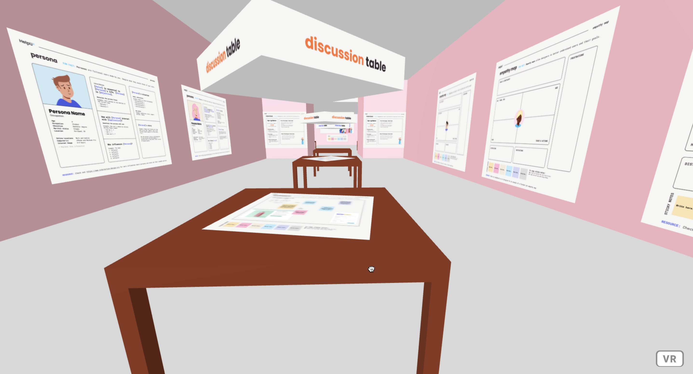
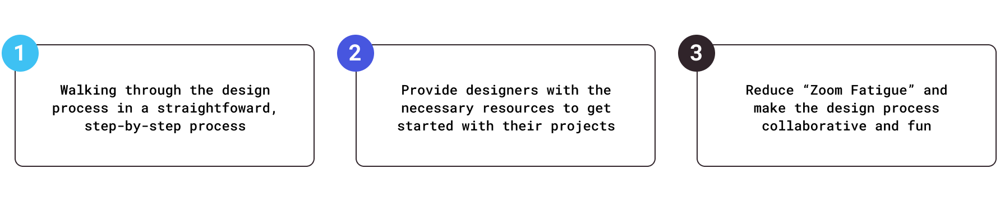
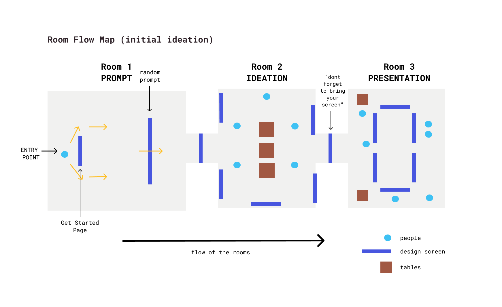

Background
- HelpUX TL;DR: A VR app that allows designers to brainstorm, ideate, and prototype a product in a collaborative, 3D space
- My Role: Lead designer, established overall branding and directed high fidelity prototyping
- Team: Julie Lely, Eugenia Zhang, Katie Dretler
- Timeline: 24 hours
- Tools: Figma, DrawKit, Heroku
Preview
A quick preview of HelpUX, a VR web app
Introduction
Design a solution using Figma in 24 hours
For this hackathon, I teamed up with my Wellesley classmates Eugenia and Katie. We all took CS220 - Human-Computer Interaction and fell in love with HCI, design, and Figma! Teams were asked to design a solution to one of the two prompts: “Bring joy to the world” or “Make design more accessible.” With our HCI knowledge fresh in our minds, we decided to pursue the “Make design more accessible” prompt and create a digital solution in 24 hours.
The Problem
How do we make design more accessible?
As new designers, we went back in time to the first days of our HCI class and our discovery of UI/UX design. To all three of us—and voiced by many of our peers—one of the most common thoughts that came into our mind when we started design was: “where exactly do I start?” Navigating through the design process is quite daunting, so how can we make design both accessible, approachable, and fun to newcomers?
Ideation & User Analysis
“Design is overwhelming...where do I start?"
Walk through the design process step by step
After taking our HCI class, we wanted to share what we
learned in class in an easy and fun way. From empathy maps
and personas to high fidelity prototyping, we wanted to make
each step of the design process clear and straightforward.
Create a collaborative and fun virtual environment
We also took our HCI class remotely and often felt disconnected—and
almost isolated—during our group zoom calls. During one of our
lectures, our professor asked students to design VR rooms through
Mozilla Hub to recreate the HCI lab at Wellesley College since we
weren’t able to experience it in person. We found that VR could
be a great solution to make ourselves seem less disconnected
during the pandemic.
Insights:
Product Decisions
UI/UX Design with a virtual reality twist
We organized our VR space in into three different rooms, representing each stage in the design process:
Three main "rooms" of HelpUX:
Introduction & Design Prompt
The first room provides a quick overview of the VR space and debriefs the user on the purpose of each room. After this screen, the user can choose a randomized design prompt. While there are many existing design prompt generators out there, we took it a step further by giving users supplementary fonts, colors, and images to use for prototyping.

Ideation & User Analysis
In this room, users can start brainstorming, creating empathy maps and personas, and conduct user interviews! Tables are set throughout the room to create a collaborative space for designers

Prototype Feedback & Show and Tell
Lastly, users can post their current prototypes and garner feedback from peers. This room encourages an iterative and collaborative approach to design.
Design Decisions
Making Design colorful, approachable, and fun!
Design Resources: For our design resources, we wanted to make our assets both colorful but not too overwhelming. Thus, we chose fun pastel colors to highlight important information and tie the illustrations into the overall color palette.
Takeaways & Next Steps
Focusing on our strengths as a team
This was my third designathon, and it was one of the most
smooth and efficient experience I’ve had. On our first call as a team,
we immediately started with getting to know each other as both people,
students, and designers. We made it clear what our strengths and
weaknesses are right off the bat, which made delegating tasks
both quick and straightforward.
Instead of spreading ourselves thin, we decided that we would
all contribute where we felt the most confident: Nicole and Arina
were both confident in user research and ideation, while Chintan
and I found our strengths in high-fidelity prototyping. While we
all contributed from the beginning to end, no matter where our
speciality lied, we funneled our focus and attention where we
felt the most confident and felt the happiest doing.